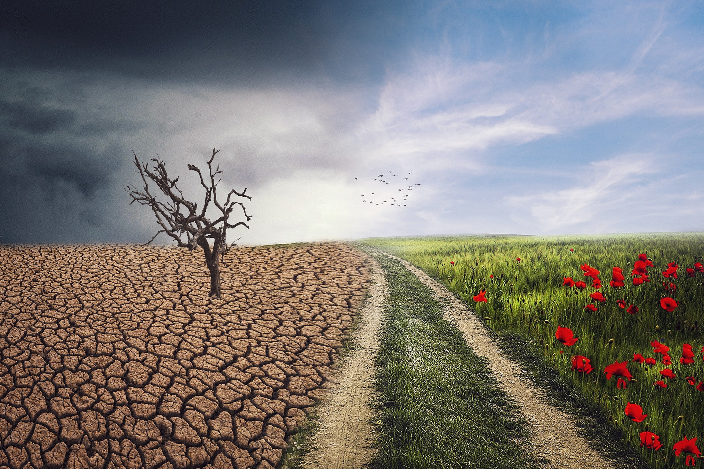

The Impact of Climate Change on Biodiversity
Introduction
Climate change is no longer a distant threat; it is a current reality that affects every corner of our planet. Biodiversity—the variety of life on Earth—plays a crucial role in maintaining ecological balance, providing ecosystem services, and supporting human well‐being. This report examines how climate change alters ecosystems, disrupts species interactions, and threatens the delicate balance of biodiversity.
Climate Change and Ecosystem Disruption
One of the most immediate impacts of climate change is the alteration of ecosystems. Rising temperatures, shifting precipitation patterns, and increased frequency of extreme weather events lead to habitat fragmentation and degradation. For example, tropical rainforests, which host a significant portion of the world's species, are increasingly stressed by altered rainfall regimes and temperature fluctuations. In many regions, warming climates have altered seasonal cycles, impacting plant phenology (the timing of flowering and fruiting) and the life cycles of dependent animal species.

The melting of polar ice caps due to global warming is another stark example. As Arctic and Antarctic environments warm, ice-dependent species such as polar bears and penguins lose critical habitat, disrupting their breeding and hunting patterns. Similarly, coral reefs, among the most biodiverse ecosystems on the planet, suffer from coral bleaching—a process driven by increased water temperatures that expels symbiotic algae vital to coral health. The decline of coral reefs not only affects marine life but also jeopardizes the livelihoods of millions who depend on them for food and income.
Effects on Species Diversity
Climate change exerts pressure on species survival through multiple pathways. Shifts in temperature and precipitation patterns force species to migrate to new habitats in search of favorable conditions. However, not all species can move quickly or adapt to new environments. This leads to local extinctions, reduced genetic diversity, and disrupted food webs.
Research indicates that many species already exhibit signs of stress, with observable shifts in distribution ranges. For example, numerous butterfly species in temperate regions have been documented moving northward or to higher elevations. Migratory birds are similarly affected; changes in temperature and food availability along migratory routes can result in mismatches between peak resource availability and breeding seasons. Additionally, the introduction of invasive species—often favored by warmer climates—further compounds the stress on native species, leading to competitive exclusion and increased rates of extinction.
Impact on Habitat Integrity
The integrity of habitats is essential for the survival of species. Climate change contributes to habitat loss through mechanisms such as desertification, sea-level rise, and increased frequency of wildfires. In coastal regions, rising sea levels encroach on terrestrial ecosystems, leading to the loss of wetlands and mangroves that serve as critical buffers against storms and breeding grounds for diverse marine species.
Moreover, the frequency and intensity of wildfires have increased in many regions, particularly in areas like the western United States and Australia. These fires destroy vast tracts of forest and grassland, leaving fragmented landscapes that hinder species migration and reduce the availability of essential resources such as food and shelter. The resulting mosaic of burned and unburned areas disrupts ecological continuity, making it more difficult for species to recover after disturbances.
Consequences on Ecological Services
Biodiversity is not only about the variety of species but also about the services these organisms provide. Ecosystem services such as pollination, water purification, carbon sequestration, and soil fertility are all intimately linked to biodiversity. Climate change can disrupt these services, leading to far-reaching consequences for both natural ecosystems and human societies.
For instance, pollinators such as bees and butterflies are crucial for the reproduction of many flowering plants, including those in agricultural systems. Altered climate conditions can shift the blooming periods of plants, leading to temporal mismatches between flower availability and pollinator activity. In aquatic systems, changes in temperature and precipitation affect water quality and the ability of wetlands to filter pollutants. The loss or reduction of these ecosystem services can have cascading effects, reducing agricultural productivity and increasing the vulnerability of human populations to environmental hazards.
Mitigation and Adaptation Strategies
Addressing the impacts of climate change on biodiversity requires a two-pronged approach: mitigation of further climate change and adaptation to the changes already underway. Mitigation efforts focus on reducing greenhouse gas emissions through renewable energy adoption, energy efficiency, and reforestation. By limiting the extent of future climate change, these actions help reduce the intensity of habitat loss and species disruption.
Adaptation strategies, on the other hand, involve managing ecosystems to increase their resilience. Establishing protected areas, creating wildlife corridors, and restoring degraded habitats are essential to facilitate species migration and allow ecosystems to adjust to new conditions. Conservation biologists are also exploring innovative approaches such as assisted migration, where species are deliberately relocated to areas with more suitable climatic conditions.
The Role of International Cooperation
Given that climate change is a global issue, international cooperation is critical. Agreements like the Paris Agreement have laid the groundwork for collaborative efforts to reduce emissions and fund adaptation projects. In addition, initiatives such as the Convention on Biological Diversity aim to conserve and sustainably use biodiversity while addressing the impacts of climate change. Effective policies require not only strong scientific evidence but also the political will to implement and enforce regulations that protect natural ecosystems.
Case Studies and Future Outlook
Several case studies underscore the challenges and opportunities in addressing biodiversity loss due to climate change. For instance, the Great Barrier Reef in Australia is experiencing unprecedented levels of coral bleaching, prompting both local and international research and conservation initiatives. Similarly, the shifting distribution of alpine species in European mountain ranges has led to concerted efforts to preserve high-altitude ecosystems through targeted conservation programs.
The future of biodiversity in the face of climate change remains uncertain. While there is cause for alarm, there is also hope that through coordinated scientific research, innovative conservation strategies, and robust policy measures, the impacts can be mitigated. Continued monitoring and adaptive management will be key in ensuring that ecosystems retain their resilience and continue to support the diversity of life on Earth.
Conclusion
The impact of climate change on biodiversity is profound and multifaceted. From altering ecosystems and species distributions to compromising ecosystem services, the effects are both immediate and long-lasting. Addressing these challenges requires comprehensive mitigation and adaptation strategies, bolstered by international cooperation and targeted conservation efforts. As the scientific community continues to unravel the complexities of climate change, it becomes ever more apparent that preserving biodiversity is not just an environmental imperative—it is essential for the continued health and stability of our planet.